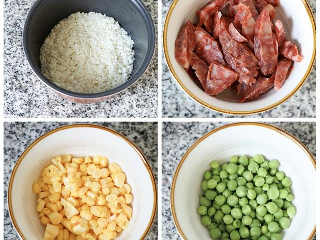
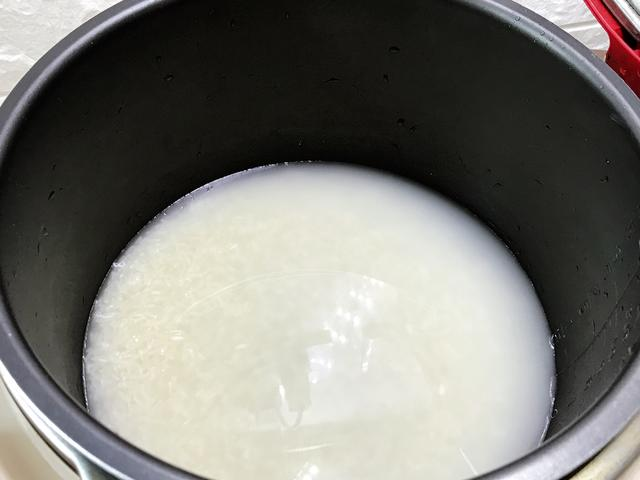
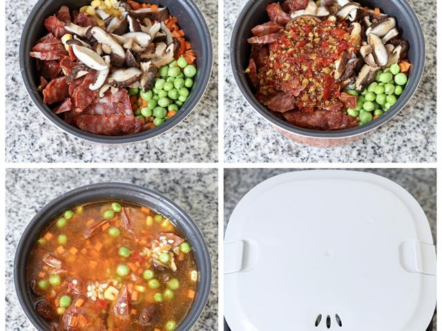
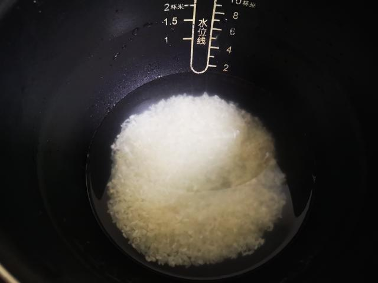
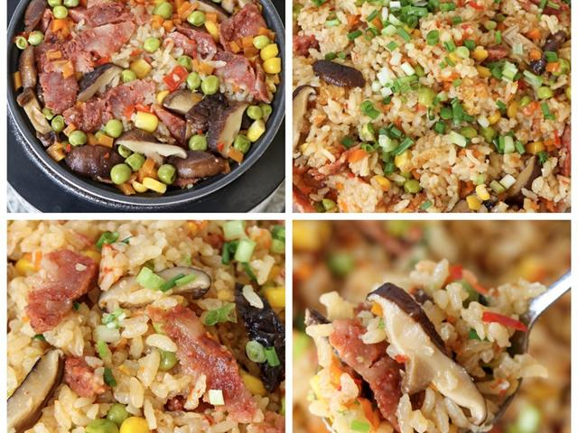

01 · 本课目标
为什么先学焖饭？
它几乎不需要炒功，却教你两件更重要的能力：一次放对米和水，以及把等待时间利用起来。
本课记住一句话：水宁少勿多。米 1 杯配水约 1.1 杯；蔬菜会出水，所以别凭感觉多加。
02 · 用料
买这些就够了
腊肠选广式或普通甜肠都可以；新手第一次不建议放咸肉，容易整锅偏咸。
1 根小葱 油让米饭更亮；葱花最后拌入。
还需要：电饭煲、一把刀、一块案板、一把小勺。香菇最好提前 30 分钟泡，赶时间可用温水泡 15 分钟。
03 · 跟着做
五步，按下按键等饭熟
中间不要开盖偷看，保温后再焖 10 分钟，是这锅饭好吃的关键。
第一段 · 开火前准备（约 8 分钟）
-
STEP 备菜 · 约 4 分钟
切腊肠、香菇和胡萝卜
腊肠斜切成薄片；泡好的香菇去蒂切片；胡萝卜先切条再切丁；小葱切葱花。
看到这样算对：腊肠片约 0.3 厘米厚，胡萝卜丁和香菇丁都小于指甲盖，能和米饭一起熟。

-
STEP 淘米 · 约 2 分钟
淘米并量水
大米放进电饭煲内胆，加水轻轻搅两下倒掉，重复 1–2 次。然后加入约 1.1 杯清水（水面到米面约一个指节）。
看到这样算对：淘米水倒掉后不再混浊；水量宁少勿多，因为蔬菜和腊肠都会出水。

-
STEP 码料 · 约 2 分钟
把料铺在米上，淋生抽和油
把腊肠、香菇、胡萝卜铺在米表面，不用搅拌；淋半汤匙生抽和几滴油。新手先少放生抽，出锅尝过再补。
看到这样算对：料没有沉到水底；水面刚好没过米面，不是“泡在汤里”。

第二段 · 交给电饭煲（约 35 分钟）
-
STEP 煮饭 · 约 25 分钟
按下煮饭键，期间别开盖
盖上盖子，按“煮饭”或“精煮”。从按下到跳保温约 25 分钟，中途不要开盖——蒸汽是焖饭的一部分。
看到这样算对：跳闸前能听到锅内持续沸腾声；如果你中途打开过，多焖 5 分钟补偿。

-
STEP 焖饭 · 约 10 分钟
跳保温后再焖 10 分钟，开盖翻匀
跳闸后不要马上开盖，再等 10 分钟让米饭把多余水分吃进去。最后开盖，用饭勺从底往上翻匀，撒葱花。
看到这样算对：米饭粒粒分明但不干硬，腊肠的油裹在米上，锅底没有积水。

04 · 翻车急救站
焖饭常见的四类问题
电饭煲的容错率很高，多数问题都能在出锅前补救。
饭太湿，像粥
为什么：水加多了，或蔬菜本身水分大。
现在怎么办：把饭翻松，盖上盖子按一次“快煮/再加热”，10 分钟后开盖再翻一次，水汽会散掉一部分。
下次避免：米水按 1:1.1，蔬菜多时再少 1–2 汤匙水。
饭太干或夹生
为什么：水太少，或煮饭中途频繁开盖。
现在怎么办：在饭上均匀淋两三勺开水，再按一次“煮饭”，跳闸后焖 10 分钟；不要加冷水。
下次避免：水至少到米面一个指节，中途忍住不开盖。
锅底结了一层锅巴
为什么：水偏少、保温时间太长，或跳闸后一直插着电。
现在怎么办：先把上面的饭盛出来；锅巴如果只是金黄而不是焦黑，其实很香，可以泡点热汤吃。
下次避免：焖完 10 分钟就拔电，别让饭在保温里待一小时。
整锅偏咸
为什么：腊肠本身有咸味，生抽又放多了。
现在怎么办：拌入一些没调味的熟蔬菜，或配一杯白水/清汤一起吃，不用倒掉。
下次避免：新手生抽先放半汤匙，出锅尝过再补。
05 · 学会标准
怎么算“学会了”？
这锅饭能独立完成，你的“一人食”就有了主食底子。
-
1
不看步骤能配好水 闭着眼也知道米和水的比例，不用再翻手机。
-
2
米粒分明不夹生 夹起一筷子，没有硬心，也没有泡成粥。
-
3
食材均匀不沉底 腊肠和菜散在饭里，翻匀后每一口都有料。
-
4
味道刚好 腊肠香但不齁，米饭有油润感，空口能吃下一碗。